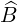
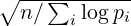
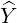

In recent decades, while tensor data have gained popularity in modern science, their high-dimensional structures often pose challenges for statistical analysis, specifically in model-based clustering. Model-based clustering is a statistical approach to data clustering, where observed data is considered to have been created from a finite combination of component models, such as the Gaussian mixture model (GMM). Since the formalization of the expected-maximization (EM) algorithm by Dempster et al. (1977), the EM algorithm has been widely employed in the majority of model-based clustering applications. While the GMMs can be readily extended to higher-order tensors using the standard EM algorithm, their performance can be further enhanced by integrating the Doubly Enhanced EM algorithm (DEEM), as proposed by Qing Mai and Deng (2022). Mai et al. consider a tensor normal mixture model (TNMM) that incorporates tensor correlation structure and variable selection for clustering and parameter estimation. They developed the DEEM algorithm which enables DEEM to excel in high-dimensional tensor data analysis. Similar to the EM algorithm, DEEM carries out an enhanced E-step and an enhanced M-step.
In this blogpost, we first introduce the DEEM methods with intermediate steps for the theoretical explanation. The objective is to break down the steps, making the derivation more accessible for our readers to follow. Subsequently, we will conduct a simulation study to evaluate the performance of DEEM.
Before delving into DEEM, we would like to review the EM algorithm and its functioning in clustering.
As we have learned in class, the EM algorithm is an iterative approach that cycles between two steps for maximum likelihood estimation in the presence of latent variables. The observed data Y is incomplete and data Z is missing. The first step is to write down the joint likelihood, Lc(𝜃|Y,Z), of the “complete” data (Y,Z). The “E” step of the EM algorithm is to compute the conditional expectation of log-likelihood, logLc(𝜃|Y,Z), given Y, assuming the true parameter value is 𝜃(ν)
In the “M” step, we maximize Q(𝜃,𝜃(ν),Y ) with respect to 𝜃 with 𝜃(ν) fixed. We repeat the E step and M step until convergence.
The EM algorithm is well-known for use in unsupervised learning problems such as clustering with a mixture model. The process goes as follows:
Let’s consider a simple example. Suppose we have data Xi as shown in Figure 1, which comes from two distinct classes. We use this data to build a Gaussian model for each class. Since we don’t know which class each observation belongs to, there is no straightforward way to construct two Gaussian models to partition the data. Therefore, we begin with a random guess of our Gaussian model parameters: μ1,σ12,μ2,σ22.
We have ‘missing’ data points Xi that we believe belong to either of the two distributions. After initializing two random Gaussian models, we compute the likelihood of each observation, Xi, being expressed in both of the Gaussian models. The next is the E-step, where we compute the probability that each Xi can belong to any of two distributions. Now we have a probability of belonging to either distribution for each point.
In the M-step, we update the parameters, μ1,σ12,μ2,σ22, of the model to their most likely values. For the new μ1, we take a weighted average of all the points, weighted by the probability that they belong to the first distribution. Denoting pi is the probability that Xi belongs to the first distribution.

The new σ12 can be updated similarly.

We repeat this process for μ2 and σ22 and update our distributions. We iterate through the E-step and M-step until convergence, obtaining two clusters as shown in Figure 2.
While the term “tensor” might sound unfamiliar to some, tensors are simply multi-way arrays. Data is often structured as matrices, and they are in fact second-order tensors. When we use the term “tensor,” we usually mean tensors of third-order and higher. The “order” means the dimension of a tensor, and it is sometimes called “mode.” You can think of a third-order tensor as a cube. As shown in Figure 3, a tensor can be manipulated similarly as a matrix. In a matrix, we can talk about rows and columns. In a third-order tensor, we can talk about fibers when you fix two modes and keep all values of one mode. The index is then the mode that has all the values. Slices are when you fix one mode and keep all values for the rest of the modes. The index is then the mode that is fixed.
Before we continue onto the DEEM algorithm, some notations are necessary to understand
derivations in the following section. Note that the following notations are taken from Kolda and
Bader (2009). First of all, we should go over the concept of matricization. If we want to matricize a
third-order tensor, we can think of cutting a cube into slices and put the slices side-by-side to make
them into a matrix. This concept is intuitive but much more awkward when we want to define it
formally. In Kolda and Bader (2009), the mode-n matricization of a tensor 𝒳 ∈ℝI1×I2× ×IN is
denoted by X(n), which is a matrix of the dimension (In,∏
p≠InIp). (The first dimension comes from
the dimension of mode n, and the second dimension comes from the product of all the other
dimensions.) The tensor element (i1,
×IN is
denoted by X(n), which is a matrix of the dimension (In,∏
p≠InIp). (The first dimension comes from
the dimension of mode n, and the second dimension comes from the product of all the other
dimensions.) The tensor element (i1, ,iN) is mapped to the matrix element (in,j) in the following
manner:
,iN) is mapped to the matrix element (in,j) in the following
manner:
 |
Next, the notation ⋅ is defined as:
 |
where A are matrices and 𝒳 and 𝒢 are tensors. The symbol ×n means n-mode (matrix) product of a
tensor 𝒢∈ℝI1×I2× ×IN and the matrices A(n) ∈RJ×In. 𝒢×nA(n) is then a tensor of the
dimension I1 ×
×IN and the matrices A(n) ∈RJ×In. 𝒢×nA(n) is then a tensor of the
dimension I1 × × In−1 × J × In+1 ×
× In−1 × J × In+1 × × IN. We can write the elements of 𝒢×nA(n)
as:
× IN. We can write the elements of 𝒢×nA(n)
as:
 |
With that, we are ready to learn about the DEEM algorithm. If you are interested in knowing more about tensors, a very popular and highly cited paper by Kolda and Bader (2009) has lots of great details. So be sure to check it out!
In this subsection, we introduce the doubly enhanced EM (DEEM) algorithm and discuss its theoretical properties.
Let Z denote the random tensor in ℝp1× ×pM such that every element in Z is distributed as
N(0,1) and is independent of the other elements in Z. Then we say that a random tensor X has a
tensor normal distribution, denoted by X ∼ TN(μ;Σ1,…,ΣM), if X = μ + Z;Σ11∕2,…,ΣM1∕2, where
μ ∈ℝp1×
×pM such that every element in Z is distributed as
N(0,1) and is independent of the other elements in Z. Then we say that a random tensor X has a
tensor normal distribution, denoted by X ∼ TN(μ;Σ1,…,ΣM), if X = μ + Z;Σ11∕2,…,ΣM1∕2, where
μ ∈ℝp1× ×pM is the total mean and each Σi ∈ℝpi×pi means the covariance matrix within ith class.
We can find that the density of X has the form
×pM is the total mean and each Σi ∈ℝpi×pi means the covariance matrix within ith class.
We can find that the density of X has the form
| (1) |
where p = p1p2 pM and qi = p∕pi.
pM and qi = p∕pi.
We will consider independent tensor-variate observations in ℝp1,× ×pM drawn from K clusters
with the same within-class covariance matrices; suppose that μi’s are the mean tensor
of the kth cluster. Let πk be the probability of an observation to be taken from the kth
cluster.
×pM drawn from K clusters
with the same within-class covariance matrices; suppose that μi’s are the mean tensor
of the kth cluster. Let πk be the probability of an observation to be taken from the kth
cluster.
Then the sample {Xi}i=1n from a mixture of the tensor normal distributions can be written as the following:
 |
or equivalently,
| (2) |
Hence, Y i indicates the number of the cluster from which Xi was taken, and if Y i = k is given, Xi has the tensor normal distribution with the mean μk of the cluster k and the within-class covariance matrices Σ1,…,ΣM. (Recall we assume that the clusters have the same within-class matrices.)
Suppose that {Xi}i=1n is a sample from the model (2). Let 𝜃 = {πi,μi,Σj : 1 ≤ i ≤ K,1 ≤ j ≤ M} denote the set of all parameters in the model. If we can observe Y i, then the complete log-likelihood can be obtained as follows:
| ℓc(𝜃;X,Y ) | = log ∏ i=1nπ Y ip(Xi|μY i;Σ1,…ΣM) | ||
| = ∑ i=1n[log π Y i + log p(Xi|μY i,Σ1,…,ΣM)]. |
But, in general, we cannot observe Y i; hence, from an initial value  (0), we create a sequence
(0), we create a sequence  (t)
through the E-step to obtain the Q function
(t)
through the E-step to obtain the Q function
![∑n ∑K
Q(𝜃;～𝜃(t)) = E ～(t)[ℓc(𝜃;X,Y )] = ～ξ(tik)[logπk + logp(Xi|μk,Σ1,...ΣM )]
Y |X,𝜃 i=1k=1](blog20x.png) |
where
| (3) |
and the M-step to update the parameter
 |
Then the EM sequence  (t) converges to the MLE, but there are some issues in our situation: Getting
the updates for πk and μk is quite easy and straightforward, but it is challenging to obtain the
updates for the covariance matrices Σi. When we compute
(t) converges to the MLE, but there are some issues in our situation: Getting
the updates for πk and μk is quite easy and straightforward, but it is challenging to obtain the
updates for the covariance matrices Σi. When we compute  ik(t) in (3), all the elements in Xi are
used, and the standard EM algorithm does not involve a process for variable selection. Thus, due to
an excessive number of parameters in the model, it may lead to the accumulation of errors, which
potentially resulting in inaccurate estimates.
ik(t) in (3), all the elements in Xi are
used, and the standard EM algorithm does not involve a process for variable selection. Thus, due to
an excessive number of parameters in the model, it may lead to the accumulation of errors, which
potentially resulting in inaccurate estimates.
To overcome these problems, we introduce the enhanced E-step, where we replace  ik(t) with an
estimator
ik(t) with an
estimator  (t) that can be calculated relatively faster under the sparsity assumption. We want to find
the objective function QDEEM that has a better property than the standard Q function above. First,
it can be seen that
(t) that can be calculated relatively faster under the sparsity assumption. We want to find
the objective function QDEEM that has a better property than the standard Q function above. First,
it can be seen that
![π
ξi1 = P(Yi = 1|Xi,𝜃) = ----∑K-------------1-------------------
π1 + k=2 πkexp [⟨Xi − (μk + μ1)∕2,Bk⟩]](blog27x.png) |
and
![-----πkexp-[⟨Xi-−-(μk-+-μ1)∕2,Bk⟩]-----
ξik = P (Yi = k|Xi,𝜃) = π1 + ∑K πj exp [⟨Xi − (μj + μ1)∕2,Bj⟩]
j=2](blog28x.png) |
for k ≥ 2, where
 |
Then we assume the sparsity condition; for Bk = [bkJ]J, where J = (j1,…,jM) denotes an index of the
tensor, we impose the condition b2J =  = bKJ = 0 for almost every J. In other words, if
D = {J : bkJ≠0 for some k = 2,…,K}, then we assume that the number of elements in D is
significantly smaller than p = p1p2
= bKJ = 0 for almost every J. In other words, if
D = {J : bkJ≠0 for some k = 2,…,K}, then we assume that the number of elements in D is
significantly smaller than p = p1p2 pM. This assumption comes from the belief that, in the
high-dimensional setting, most of variables are not significant in estimation. The above expressions for
ξik show that this assumption reduces the computational cost and improves the estimation
efficiency.
pM. This assumption comes from the belief that, in the
high-dimensional setting, most of variables are not significant in estimation. The above expressions for
ξik show that this assumption reduces the computational cost and improves the estimation
efficiency.
If we accept the fact that (B2,…,BK) minimizes the quantity
 |
for Bk = μk − μ1;Σ1−1,…,ΣM−1, then it is reasonable to obtain the sequence of estimates  k(t+1)
by solving the optimization problem
k(t+1)
by solving the optimization problem
| (4) |
where we added the lasso penalty term to satisfy the sparsity assumption to some extent. Using these
 k(t+1), we can obtain the sequence
k(t+1), we can obtain the sequence  ik(t+1) defined by
ik(t+1) defined by
| (5) |
and
![[ ]
^π(kt) exp ⟨Xi − (^μ(kt)+ ^μ (t1))∕2,B^(kt+1)⟩
ξ^(itk+1)= --(t)--∑------(t)----[-------(t)---(t)------(t+1)-].
^π 1 + Kj=2 ^πj exp ⟨Xi − (^μj + ^μ1 )∕2, ^B j ⟩](blog38x.png) |
Then, the objective QDEEM is defined using  (t) as follows:
(t) as follows:
![n K
DEEM ^(t) ∑ ∑ ^(t)
Q (𝜃;𝜃 ) = ξik [logπk + logp(Xi|μk,Σ1, ...,ΣM )],
i=1 k=1](blog40x.png) |
or disregarding the constant term, we can get
 |
In light of the sparsity assumption,  ik(t) can be computed based on the values of relatively smaller
variables.
ik(t) can be computed based on the values of relatively smaller
variables.
The parameters can be updated inductively from the proposed QDEEM function:
 |
The estimates for πk and μk can be obtained by the formula
| (6) |
Then given ξik(t+1), we calculate the intermediate covariance matrices
 |
where A(j) denotes the mode-j matricization of a tensor A, and the conditional variance of Xi1…1
 |
The target covariance estimator is given by scaling the intermediate covariances with ( 111)(t+1) and
(
111)(t+1) and
( 111)(t+1):
111)(t+1):
 |
In sum, starting from the initial value of 𝜃(0), we first obtain  k(1) by solving the optimization
problem (4). Then we calculate ξik(1) using the formula (5). Given ξik(1), πk and μk can be simply
updated as (6). Finally, combining the intermediate covariance matrices
k(1) by solving the optimization
problem (4). Then we calculate ξik(1) using the formula (5). Given ξik(1), πk and μk can be simply
updated as (6). Finally, combining the intermediate covariance matrices  ik(1) and the conditional
variance (
ik(1) and the conditional
variance ( 111)(1), we obtain the covariance matrix estimators
111)(1), we obtain the covariance matrix estimators  j(1). And we repeat this process to
update the parameters and get a sequence of
j(1). And we repeat this process to
update the parameters and get a sequence of  (t).
(t).
Then, now we are interested in how this sequence of parameters  (t) behave. In fact, under some
initialization condition, it can be seen that there are some constant C and 0 < κ < 1∕2 such that, with
a probability ≥ 1 − O(∏
i=1Mpi−1),
(t) behave. In fact, under some
initialization condition, it can be seen that there are some constant C and 0 < κ < 1∕2 such that, with
a probability ≥ 1 − O(∏
i=1Mpi−1),

where s = o( ) and d0 is a measure of the difference between the initial value
) and d0 is a measure of the difference between the initial value  (0) and
the true parameter 𝜃. If t is large, it follows that
(0) and
the true parameter 𝜃. If t is large, it follows that
This result implies that if the number of iterations t is large, the DEEM estimator (t) converges to the true parameter B. Here, the condition s = o() means the sparsity assumption.
We consider the error rate of DEEM and the optimal clustering rule:
and
where Π denotes the permutation operator and iDEEM = argmaxk ik. Here, the optimal
clustering rule is optimal in the sense that it minimizes the clustering error. From the result above, we
can show that if t is large, then with probability ≥ 1 − O(∏
i=1Mpi−1)
ik. Here, the optimal
clustering rule is optimal in the sense that it minimizes the clustering error. From the result above, we
can show that if t is large, then with probability ≥ 1 − O(∏
i=1Mpi−1)
Consequently, this result shows that the error rate of DEEM converges to the error rate of the optimal clustering rule if t is large.
For our simulation studies, we follow the framework used in Qing Mai and Deng (2022). For each setting, K denotes the number of mixture groups, and noise is generated as a Mth-order tensor:
| (7) |
For K − 1 mixture groups, the Xi is given as a given Bk plus the noise above. For 1 mixture group, the values are simply the noise. Qing Mai and Deng (2022) designate two types of Σk∗:
For each setting, we generate 100 independent datasets, the same number of replicates as Qing Mai and Deng (2022) use, and present the mean error rate and standard deviation.
The settings are provided in Table 1. Note that, for Bk∗, the indices not included in the subscript is 0. In other words, Bk∗ is a sparse tensor. We chose these four settings from the seven settings, because their settings are increasingly more computationally expensive, and we believe that these four settings demonstrate the advantage of the DEEM algorithm compared to the classical EM algorithm in terms of accuracy, as shown in Table 2.
| Model | Parameters |
| M1 | K = 2,p = 10×10×4,Σ1∗ = CS(0.3),Σ2∗ = AR(0.8),Σ3∗ = CS(0.3),B2,[1:6,1,1]∗ = 0.5 |
| M3 | K = 3,p = 10×10×4,Σ1∗ = CS(0.3),Σ2∗ = AR(0.8),Σ3∗ = CS(0.5),B2,[1:6,1,1]∗ = 0.5,B3,[1:6,1,1]∗ = −0.5 |
| M4 | K = 4,p = 10 × 10 × 4,Σ1∗ = I10,Σ2∗ = AR(0.8),Σ3∗ = I4,B2,[1:6,1,1]∗ = 0.8,B3,[1:6,1,1]∗ = −0.8 |
| M5 | K = 6,p = 10×10×4,Σ1∗ = AR(0.9),Σ2∗ = CS(0.6),Σ3∗ = AR(0.9),B2,[1:6,1,1]∗ = 0.6,B3,[1:6,1,1]∗ = 1.2,B4,[1:6,1,1]∗ = 1.8,B5,[1:6,1,1]∗ = 2.4,B6,[1:6,1,1]∗ = 3 |
Note that it is as straightforward to calculate the mean error rate for a clustering problem than it is for a classification problem. Both methods return labels for the groups; however, the group labels do not matter. For example, if there are five observations and if their true group labels are (1,1,2,2,2) and the methods return (2,2,1,1,1), the error rate should be 0. In the paper, the authors explain that mean clustering error rate is calculated by:
We thus created a function to permute the true labels, compare the estimated labels and the true labels, and return the lowest error rate.
To compare the speed of the two methods, we also record the computation time. Table 3 provides the mean computation time and standard error (in parentheses) for each setting.
For the DEEM algorithm, we use the function DEEM; for the standard EM algorithm, we use the function TGMM. Both functions are from the R package TensorClustering. We use the Trnorm function from the R package Tlasso to generate tensor noise with designated covariance matrices. We use the permutations function in the gtools package to permute true labels. In short, be sure to install the three R packages: TensorClustering, Tlasso, and gtools if you would like to reproduce our simulation.
The error rates and computation time are shown in Tables 2 and 3. It is clear that DEEM has lower mean error rates in all four settings. The computation time tells a different story, however. As seen in Table 3, DEEM is not always the winner in terms of time. As the setting becomes more complicated and estimating the clusters becomes more challenging, it takes longer for DEEM to converge. In fact, judging from the amount of time it took to run the setting M5, it is possible that DEEM reached the maximum iterations.
Next we transform the values in the tables into figures, which sometimes tell clearer pictures. As shown in Figure 4, DEEM always has lower mean error rates. However, as the model becomes complicated, DEEM’s error rates become more varied, even though the mean rate is still lower. In Figure 5, the story seems more complicated. (Note that we cannot make the y-axis all the same for the four plots, because the computation time for DEEM for M5 is so long, which would make some of the boxes very small and not informative.) For the two settings M1 and M4, DEEM has lower computation time. For M3, the computation time for DEEM is much more varied, and EM has overall shorter computation time. For M5, DEEM has very long computation time; in fact, the 100 replicates took almost 10 hours to run. It is unclear if the reduction in error rate is worht the much longer computation time.
In this blogpost, we review a new method proposed by Qing Mai and Deng (2022), which is essentially an upgraded version of the classical EM algorithm. This new method, DEEM, tends to have lower error rates on tensor data. However, despite the paper’s claim that the enhanced M step in the DEEM algorithm facilitates fast covariance estimation, we have encountered situations where the running time could be prohibitive. While DEEM proves to be efficient and effective in handling tensor data, there remains potential for further enhancement.
Dempster, A., Laird, N. and Rubin, D. (1977) Maximum likelihood from incomplete data via the em algorithm. Journal of the Royal Statistical Society, 39, 1–22.
Kolda, T. G. and Bader, B. W. (2009) Tensor decompositions and applications. SIAM Review, 51, 455–500. URLhttps://doi.org/10.1137/07070111X.
Qing Mai, Xin Zhang, Y. P. and Deng, K. (2022) A doubly enhanced em algorithm for model-based tensor clustering. Journal of the American Statistical Association, 117, 2120–2134.


![(t+1) ^π(t)
^ξi1 = -(t)--∑K-----(t)----[---1----(t)----(t)-----(t+1)-]-
^π1 + j=2 ^πj exp ⟨Xi − (^μj + ^μ 1 )∕2,B^j ⟩](blog37x.png)